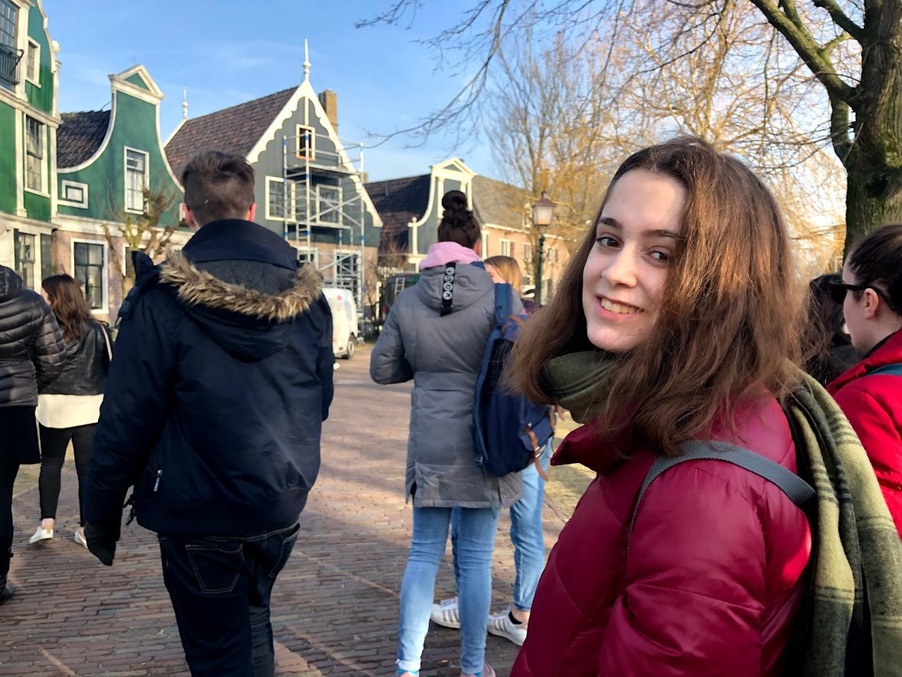
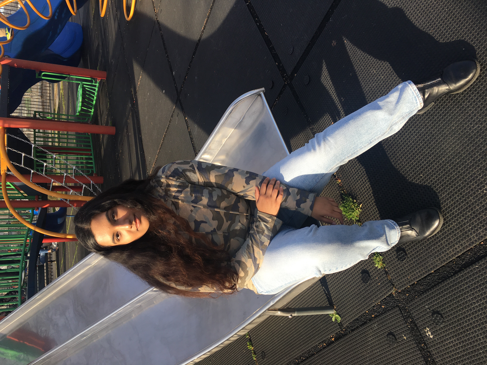
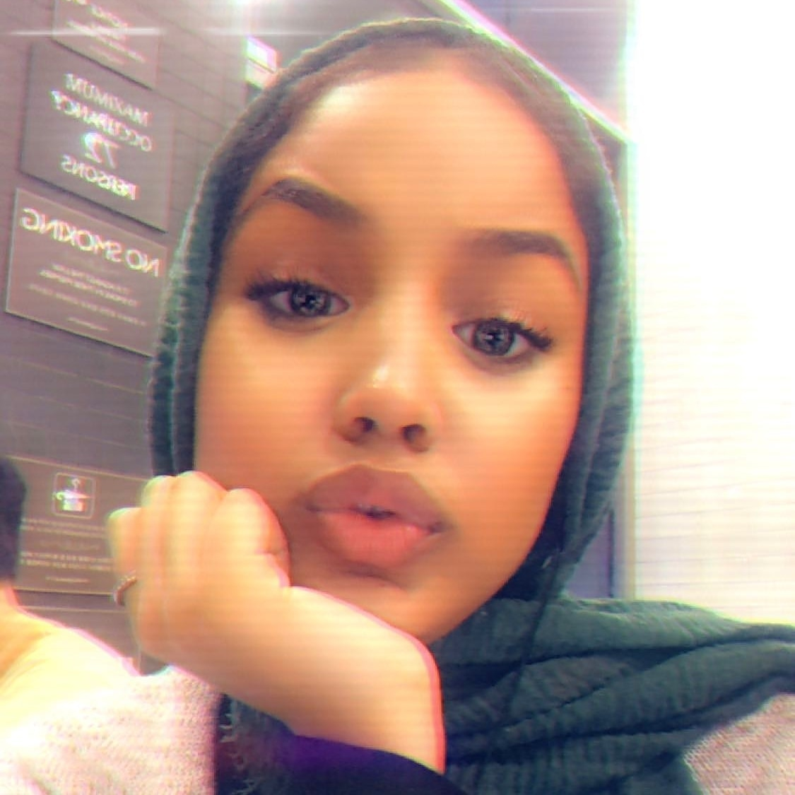

About the Creators
Ava Levine

Ava is a rising junior at Curtis High School in New York City. She first got introduced to coding this Summer at Girls Who Code.
At first, she didn't really like coding.
As time went on, she found coding and computer science to be very interesting and something that she might want to continue in the future.
Fun Facts about Ava:
Tasfia Ahmed

Tasfia is a rising senior at the Brooklyn Latin School in New York City. Like her partner Ava, she has no prior experience with coding.
Tasfia wanted to learn coding to prepare her for the increasing association between coding and the medical field.
In the future, she wants to become a nurse practitioner.
Fun facts about Tasfia:
Reela Taher

Reela is a rising senior at the Al-Noor School in New York City.
She was introduced to coding to coding through her sister, who was in the Girls Who Code club at her school. Reela didn't join it because she was
embarassed of the association to her sister. Reela finds interest in computer science and wants to continue coding in the future.
Fun facts about Reela:
Amanda R
 Amanda is a rising junior at Longwood High School in Long Island. She got introduced to coding at local library where
she did scratch for the first time. Her passion for coding continued after this encounter, bringing her to Girls Who Code in 2019.
Amanda is a rising junior at Longwood High School in Long Island. She got introduced to coding at local library where
she did scratch for the first time. Her passion for coding continued after this encounter, bringing her to Girls Who Code in 2019.
Fun facts about Amanda: